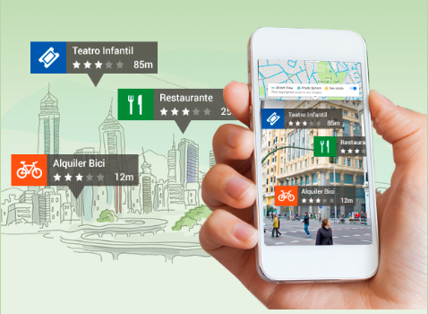

Las Tecnologías de la Información y la Comunicación (TIC) se refieren al conjunto de tecnologías
relacionadas con el manejo y procesamiento de información, así como la comunicación a través de medios electrónicos.
Estas tecnologías abarcan una amplia gama de herramientas, dispositivos y servicios que facilitan la creación, almacenamiento,
procesamiento, transmisión y acceso a la información.
Algunos de los componentes clave de las TIC incluyen:
Dispositivos físicos como computadoras, servidores, dispositivos de red y dispositivos de almacenamiento.
Figura 2. Hardware
Programas y aplicaciones que se ejecutan en hardware, como sistemas operativos, aplicaciones de productividad, software de diseño, entre otros.

Figura 3. Software
Infraestructuras que permiten la conexión y comunicación entre dispositivos, incluyendo internet, intranets y redes locales (LAN) o de área amplia (WAN).

Figura 4. Redes de computadoras
Medios y tecnologías que permiten la transmisión de datos y la interacción entre personas, como correo electrónico, mensajería instantánea, videoconferencias, entre otros.
Figura 5. Comunicaciones
La red global que conecta millones de dispositivos y permite el acceso a una vasta cantidad de información y
servicios a través de navegadores web.
Figura 6. World Wide Web
Sistemas para almacenar, organizar y recuperar información de manera eficiente.
Figura 7. Almacenamiento
Incluyen inteligencia artificial, internet de las cosas, realidad virtual, blockchain, entre otras, que están
dando forma a nuevas formas de interacción y procesamiento de datos.
Figura 8. Tecnología
Plataformas y herramientas que permiten el aprendizaje a través de recursos digitales y la colaboración en línea.

Figura 9. Educación en línea
Las TIC desempeñan un papel fundamental en la transformación digital de la sociedad, la economía y la educación. Facilitan la comunicación instantánea,
el acceso a la información global, la automatización de procesos, el desarrollo de nuevas soluciones tecnológicas y la mejora de la eficiencia en diversas
áreas de la vida cotidiana y empresarial.